01
中尼边境堰塞湖险情排除 吉隆口岸灾后重建全面启动
新华社8月30日报道，经过军地各方连续5天奋战，中尼边境吉隆口岸特大泥石流灾害形成的两个堰塞湖险情已基本排除，水位回落到安全线以下。武警西藏总队累计打通4条应急救援通道，疏散受困群众2100余人。第二阶段的灾后重建工作全面启动，国家发改委先期下达2.5亿元救灾资金，重点用于道路抢通、受损房屋重建和农田复垦。气象部门提醒未来一周仍有局地强降雨风险，次生灾害防控不可松懈。
社会
新华社8月30日报道，经过军地各方连续5天奋战，中尼边境吉隆口岸特大泥石流灾害形成的两个堰塞湖险情已基本排除，水位回落到安全线以下。武警西藏总队累计打通4条应急救援通道，疏散受困群众2100余人。第二阶段的灾后重建工作全面启动，国家发改委先期下达2.5亿元救灾资金，重点用于道路抢通、受损房屋重建和农田复垦。气象部门提醒未来一周仍有局地强降雨风险，次生灾害防控不可松懈。
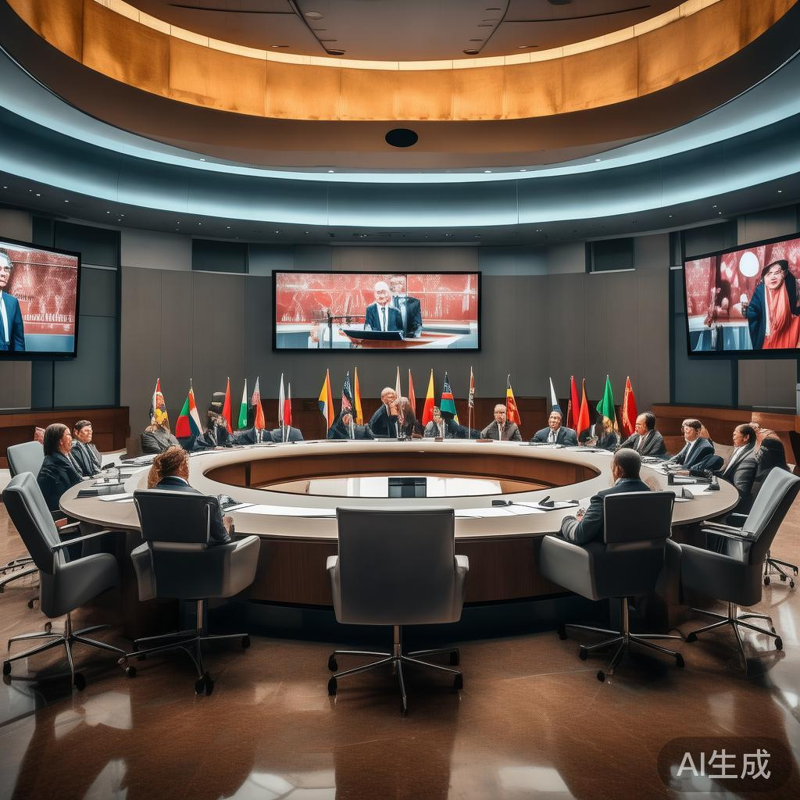
央视网8月30日报道，金砖国家领导人第十二次视频会晤今日晚间举行，习近平主席与俄罗斯、巴西、印度、南非等国领导人围绕全球治理、数字经济、绿色转型等议题深入交流。习近平提出三项倡议，包括深化金砖国家数字基础设施互联互通、建立金丝路跨境电商合作机制以及扩大本币结算范围。会议通过了《金砖国家数字经济合作框架》，并宣布2027年金砖峰会在巴西里约热内卢举行。
财联社8月30日报道，本周A股市场震荡上行，MSCI中国A50指数累计上涨4.2%，创业板指周涨幅达3.8%，北证50继续刷新年内高点。盘面上AI算力、国产芯片、人形机器人三大主线轮番走强，机构资金净流入超600亿元。北向资金本周累计净买入超过320亿元，创年内单周新高。券商分析认为9月美联储降息预期升温，叠加国内政策面持续发力，A股慢牛格局有望延续。
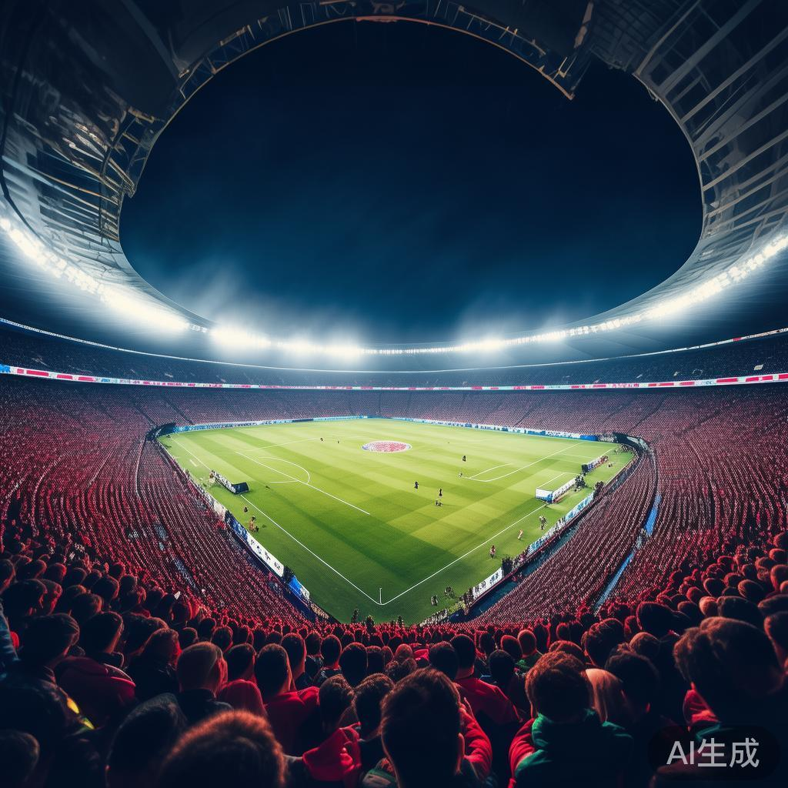
新华社8月30日报道，中超联赛第25轮焦点战今晚19:30打响，上海海港主场迎战北京国安。海港新援奥斯卡伤愈复出，武磊搭档巴尔加斯冲击锋线；国安新帅苏亚雷斯战术体系成型，张玉宁与法比奥双中锋首发。本场央视CCTV5、咪咕视频同步直播，对争冠格局影响重大。海港目前以53分领跑积分榜，国安落后8分位列第四，本场结果或将直接决定本赛季冠军归属。
财联社8月30日报道，小米18折叠旗舰手机今日10:08正式首销，开售仅5分钟全平台宣告售罄，销售额突破12亿元。本次最大亮点是首发搭载长鑫科技量产的LPDDR6内存芯片，峰值速率12800Mbps，整体性能较上一代提升约35%。雷军表示小米已向长鑫追加50亿元订单，9月中旬将开启第二轮发售。行业分析认为国产高端内存正式进入主流旗舰，标志着我国半导体存储产业链取得里程碑式突破。
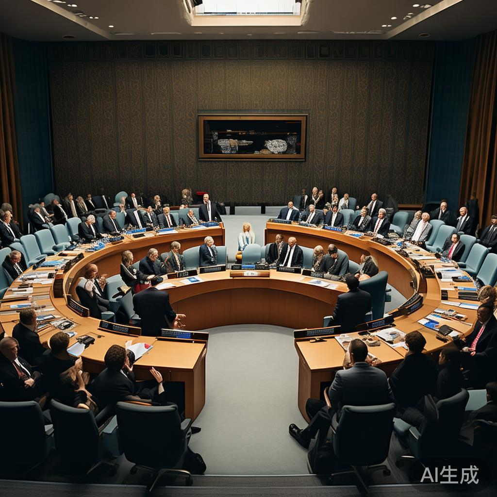
央视网8月30日报道，联合国安理会今日就乌克兰局势举行紧急公开磋商，中国常驻联合国代表傅聪在会上阐述中方立场，呼吁有关各方保持克制，回到和平对话轨道上来。本次磋商由法国和英国发起，会期长达4个多小时，美俄代表就前线态势再次交锋。中方提交了关于人道主义停火的四点主张，包括保护民用基础设施、建立人道走廊以及重启黑海粮食外运协议。联合国秘书长古特雷斯对当前局势深表关切。
财联社8月30日报道，AI芯片龙头英伟达最新公布2026财年第二季度财报，营收达468亿美元，同比增长156%，超出市场预期约8%。其中数据中心业务营收430亿美元，占比高达92%，Blackwell GPU出货占比首次突破60%。黄仁勋在电话会议中表示AI工厂建设仍处于早期阶段，公司2026年订单可见度已延伸到2027年下半年。财报发布后英伟达盘后股价大涨近7%，市值再度逼近4.5万亿美元关口。
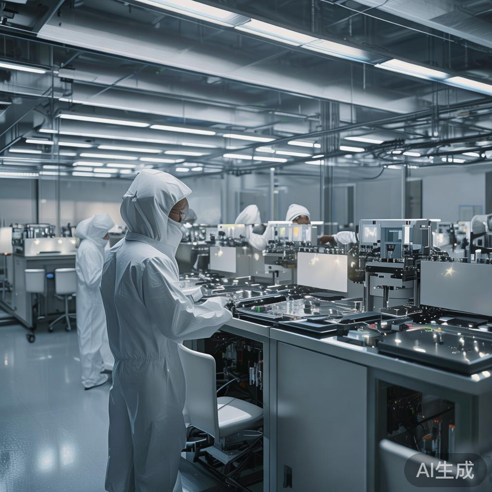
路透社8月30日报道，美国商务部已拟定新一轮对华芯片出口管制细则，28nm及以上成熟制程设备出口有望全面解禁，同时放松HBM内存和部分EDA工具的出口审查。新规预计9月中旬正式发布。财长贝森特此前表示中美双方正在技术领域寻求务实平衡。半导体行业协会预计此次松绑将带动ASML、应用材料、泛林等设备厂商对华出口增长约25%，全球半导体产业链有望迎来阶段性回暖。
财联社8月30日报道，国际金价再度刷新历史新高，伦敦现货黄金突破3650美元/盎司，本月累计涨幅超6%。白银价格同步走强，伦敦现货白银站上42美元/盎司关口。分析认为美联储9月降息概率已升至78%，美元指数走弱叠加全球央行购金潮持续，是推动金价上行的核心动力。世界黄金协会数据显示上半年全球央行净购金量达670吨，同比增长18%，新兴市场央行成为主力买家。
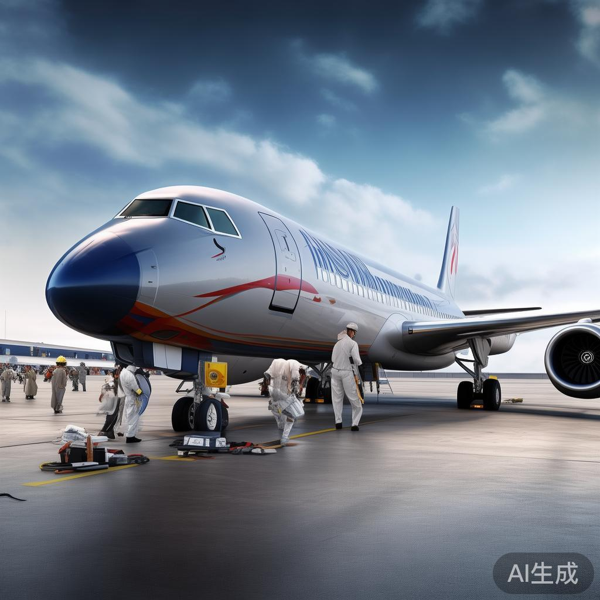
央视网8月30日报道，马来西亚航空事故调查局正式公布亚航一架空客A320客机起落架舱内发现男性遗体事件调查结果。报告显示死者为一名约30岁的外籍人士，企图藏匿于起落架舱偷渡入境，飞行过程中因高空低温缺氧及起落架收放机械动作导致坠落死亡。马航局已要求亚航全面升级起落架舱安全检查流程，并协同国际刑警组织追查偷渡网络源头。这是近10年来东南亚地区第三起同类事件。
财联社8月30日报道，医药魔方最新统计数据显示，截至8月底2026年中国创新药海外授权交易总金额已突破680亿美元，同比增长近90%。其中ADC（抗体偶联药物）领域表现尤为亮眼，百济神州、科伦博泰、荣昌生物等头部企业累计完成12笔重磅出海交易，单笔最高金额达48亿美元。券商分析认为美国IRA法案落地后对中国Biotech相对友好，叠加FDA审批加速，国产创新药出海窗口期将持续到2027年底。
新华社8月30日报道，中国外交部今日宣布中日韩三国领导人会议将于9月15日至16日在日本东京举行，这是三方时隔4年再次重启这一重要机制。国务院总理将率团出席，与日本首相、韩国总统就经贸合作、人文交流、地区安全等议题深入磋商。三方预计将发表联合宣言，并就重启中日韩自贸协定谈判达成原则共识。日方表示将以建交50周年为契机推动三国关系重回正轨。
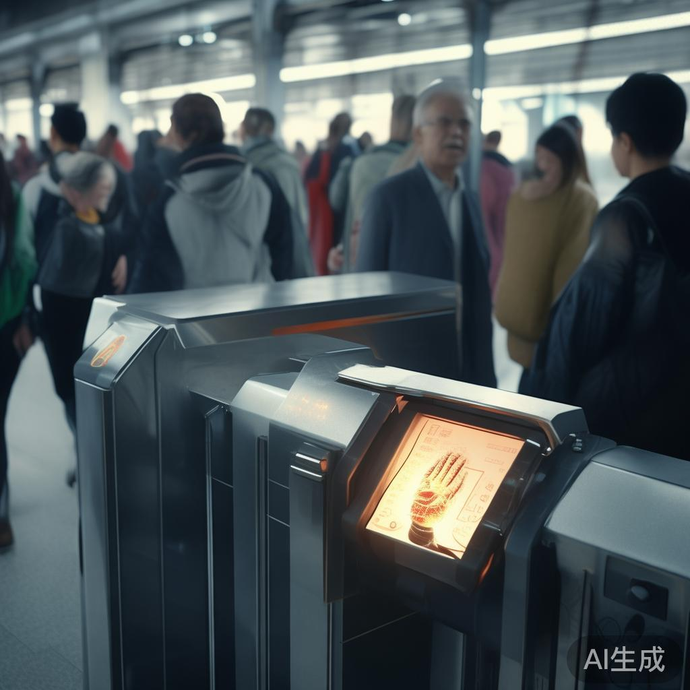
央视网8月30日报道，上海地铁刷掌支付功能自今年3月试点上线以来用户规模持续扩大，截至本周累计注册用户已突破800万人次，日均刷掌进站超过150万人次。其中60岁以上老年用户占比达41%，远超其他年龄段。刷掌支付采用静脉识别+掌纹双重认证，识别准确率达99.99%，平均通行时间仅0.3秒。深圳、广州、杭州等城市地铁正在洽谈引入该技术，预计明年上半年将实现长三角地区地铁刷掌支付互通。
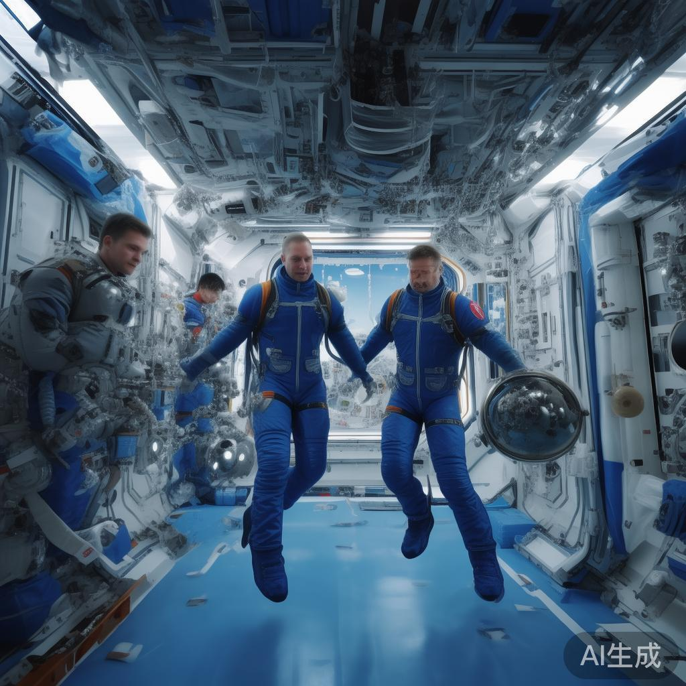
新华社8月30日报道，神舟二十一号乘组3名航天员今日下午在轨完成天宫空间站首次太空授课活动，全国超过6000万中小学生和教师通过央视新闻频道同步观看。本次授课包括空间站水球实验、陀螺仪演示以及失重环境下细胞培养观察等多项内容，航天员与地面学生进行实时连线问答。教育部表示太空授课已纳入中小学科学教育必修内容，将进一步推动青少年航天科普事业发展。
央视网8月30日报道，日本内阁今日通过2026财年防卫预算案，总额达9.2万亿日元，同比增长约8.5%，连续三年刷新历史纪录。其中太空、网络、电磁等新兴领域投入合计约1.4万亿日元，占比首次突破15%。预算还包括采购美制宙斯盾驱逐舰、F-35战斗机升级组件以及远程导弹研发。中国国防部回应称日方此举严重违背和平宪法精神，地区国家应共同警惕日本军国主义复燃倾向。
财联社8月30日报道，国务院常务会议今日召开，研究部署进一步扩大服务消费和推动服务业开放举措。会议决定自9月1日起实施入境游客便利化一揽子措施，包括延长免签停留时间至30天、扩大过境免签覆盖口岸至60个以及简化入境移动支付流程。商务部预计新措施落地后年内入境游客有望突破1.8亿人次，国际旅游收入同比增长15%以上，将带动餐饮、住宿、零售全链条消费回暖。
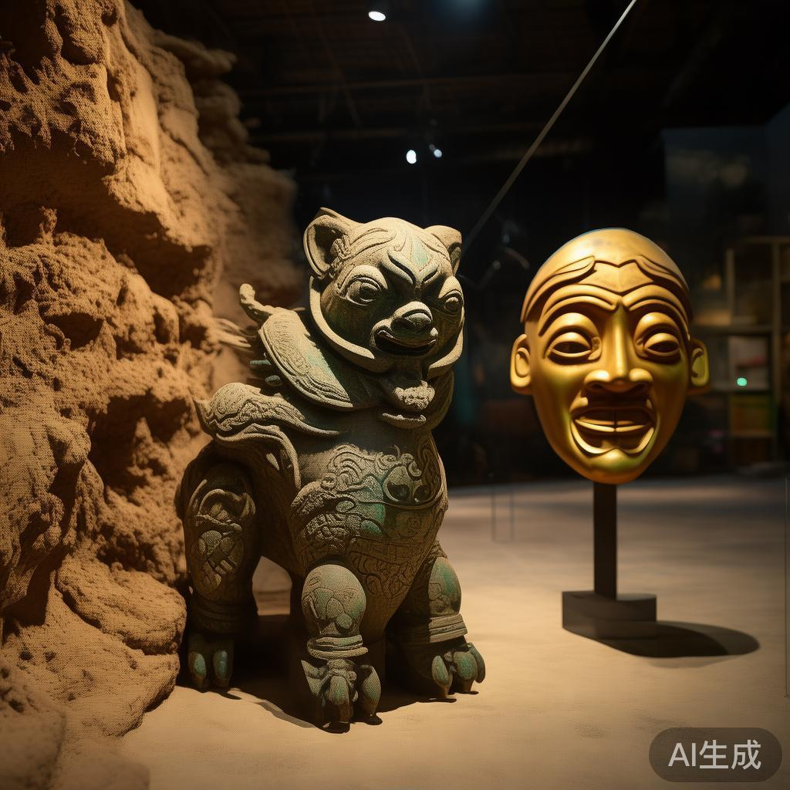
新华社8月30日报道，四川省文物考古研究院今日宣布三星堆遗址新发现6座祭祀坑，出土青铜神兽、象牙器物、金面具残片等珍贵文物3000余件。本次发掘距离1986年首次发现已过去40年，新发现的青铜神兽造型独特，长度达1.2米，融合多种动物特征，为研究古蜀文明宗教信仰提供全新物证。考古队表示将持续推进祭祀区考古发掘，预计明年将启动祭祀坑整体切割搬迁工作，以便进行实验室考古。
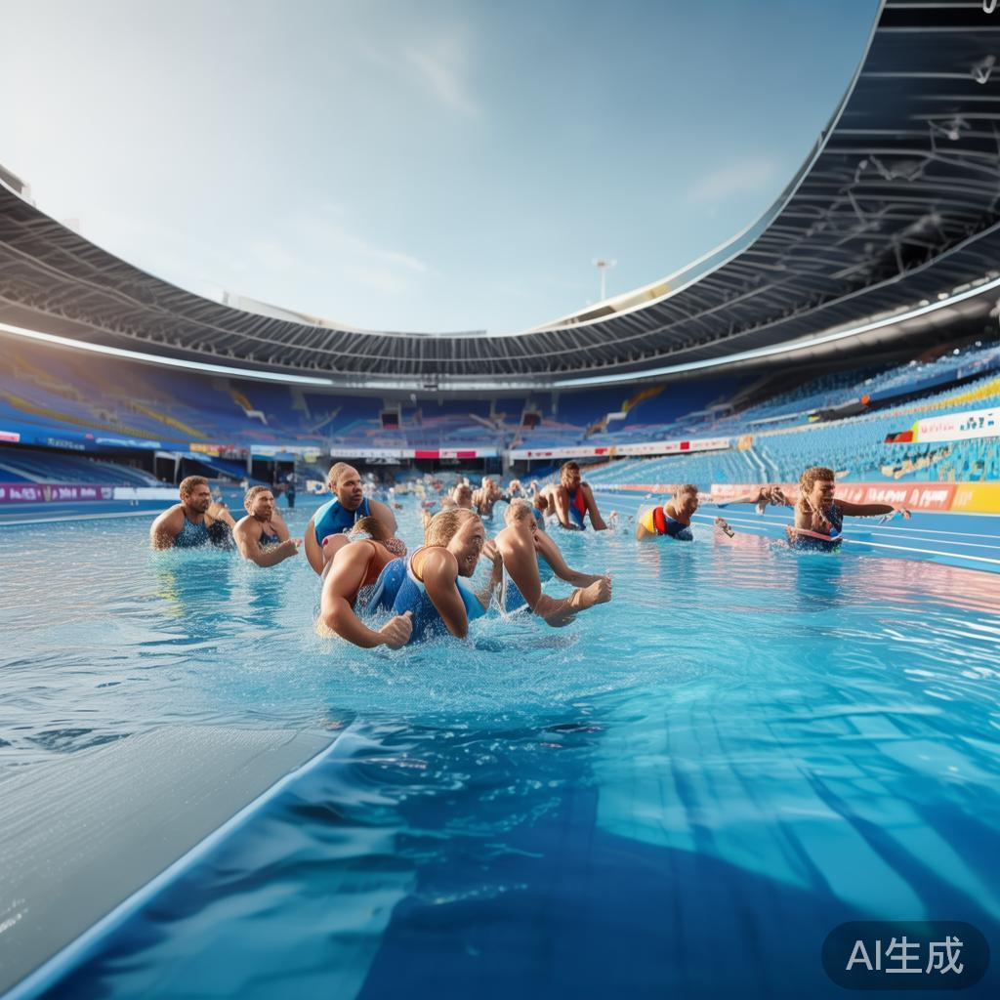
新华社8月30日报道，第17届巴黎残奥会中国体育代表团今日在京成立，总人数达285人，其中运动员185人，是我国参加境外残奥会规模最大的一次。代表团将参加全部22个大项的比赛，重点项目包括田径、游泳、轮椅篮球和乒乓球等。中国残联主席程凯表示代表团力争实现金牌榜和奖牌榜双第一目标。开闭幕式方面，轮椅击剑运动员荣静将担任开幕式中国代表团旗手。
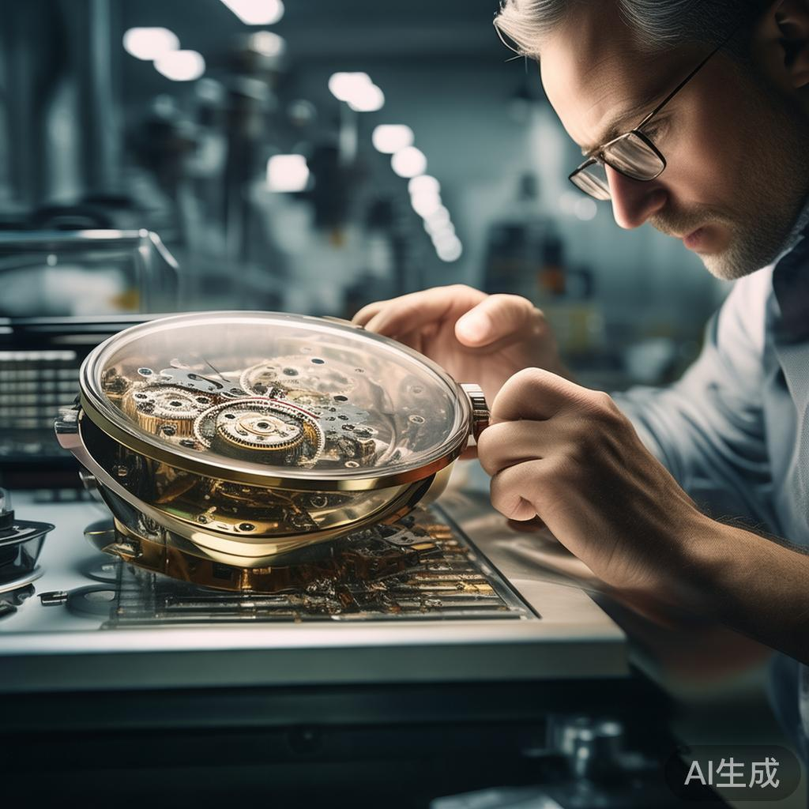
央视网8月30日报道，中国与瑞士自由贸易协定升级议定书今日在北京正式签署，双方将在原有自贸协定基础上进一步扩大市场开放。瑞士方面承诺将钟表、机械、医药三大优势产品的关税逐步降至零，中国则将在金融、科技服务、知识产权保护等方面给予瑞士企业国民待遇。商务部预计升级协定生效后，中瑞双边贸易额有望在3年内突破1000亿美元，瑞士对华出口预计增长25%以上。
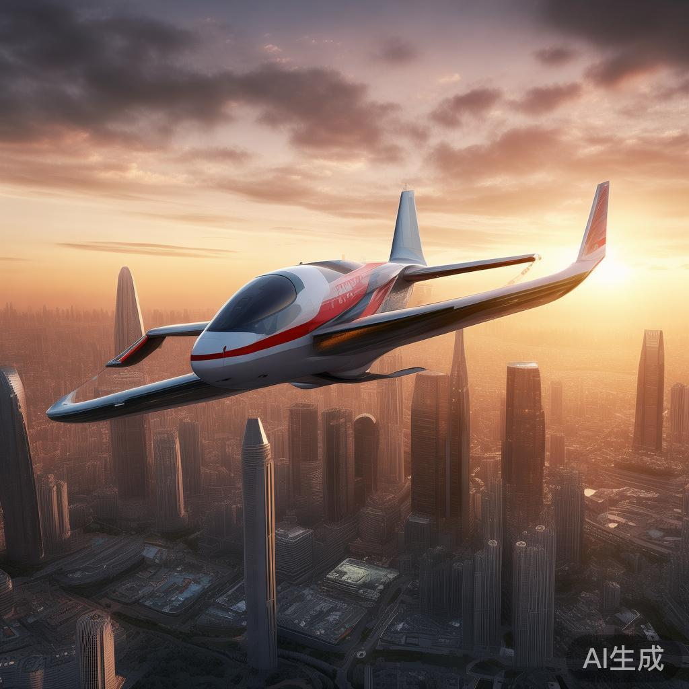
新华社8月30日报道，全国首条载人飞行汽车商业航线今日在深圳南山正式开通，由深圳湾至蛇口太子湾，单程票价299元，飞行时间仅8分钟。该航线由深圳低空经济集团与小鹏汇天合作运营，采用电动垂直起降飞行器eVTOL，已通过民航局适航审定。每架飞行器可载2名乘客，满载续航达250公里。深圳规划年内还将开通至福田、坪山等3条低空航线，初步构建大湾区15分钟低空交通圈。
💬 评论区